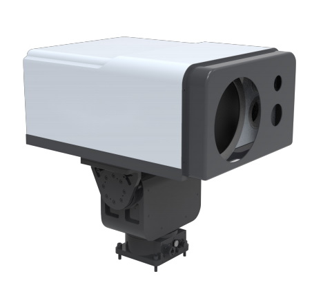

Solafact 5400
Product Introduction

SOLAFACT 5400 Passive Fourier Infrared Remote Sensing Analyzer is based on passive Fourier Infrared Remote Sensing analysis technology, which can conduct qualitative, quantitative, positioning and imaging analysis of toxic gases to be measured in the atmospheric environment from a long distance. The product uses the infrared spectral fingerprint feature information generated by the equivalent radiation brightness temperature difference between the gas to be measured and the remote measurement background to realize rapid and high-sensitivity qualitative identification and semi-quantitative concentration inversion analysis of various toxic and harmful gases; real-time presentation of toxic and harmful pollution The dynamic distribution and diffusion trend of gas in the scanning area, and sound and light warning for excessive gas. The instrument can achieve 360°, pitch ±60° rotation scanning, and the scanning monitoring radius reaches 5km.
Features
Space optical path design, high luminous flux, high sensitivity, high quality spectrum
Using high-performance and long-life Stirling cooled MCT detector, the detection sensitivity reaches ppb level.
Equipped with precision optical scanning pan/tilt, horizontal 360° scanning, pitch ±60°, monitoring radius over 5km.
With high-speed and stable optical-mechanical hardware system, it can realize fast scanning of 4cm-1/32 frames per second.
Reliable environmental adaptability
Working temperature: -20℃ ~50℃
Storage temperature: -40℃ ~50℃
Explosion-proof level: Ex db IIBT4 Gb
Protection level: IP65
Anti-vibration adaptability: The instrument meets GJB150.16A-2009, meets the anti-vibration characteristics of vehicle-mounted, ship-mounted, and airborne general fasteners, and meets the requirements for performing measurements in vibration environments.
Meets the requirements for detection and identification of hundreds of industrial compounds (TICs) and chemical warfare agents (CWAs)
It has multiple mixture detection capabilities and can detect and identify at least 6 mixtures of gas substances.
No external excitation light source is required, detection and identification can also be performed in complex dark environment backgrounds.
Optimized algorithms for instrument self-inspection, self-calibration, path interference diagnosis, water vapor compensation, etc. Perfect cloud support: support software update at any time, support database update at any time, support custom database upload, support test record upload to the cloud, support scanning QR code to view cloud report.
Rich product features
Equipped with a multi-functional monitoring terminal to meet user needs such as daily environmental monitoring, threat identification, sound and light alarm, information storage and playback, etc., and the functions support customization.
Product functions support customization, the system can be loaded on mobile carriers such as vehicles, ships, helicopters, drones, etc., and perform tasks on the move.
Extremely low maintenance costs
Exquisite structural design, simple installation and convenient operation.
Using Fourier transform infrared spectroscopy detection technology, long-distance non-contact sampling.
No consumables, no radioactive sources, no secondary pollution, and extremely low maintenance costs.
Technical Specifications
Performance Parameters
600 cm-1~1500cm-1
Hundreds of chemical substances or warfare agents (the factory library contains 46 types, which can be expanded according to user needs, up to 460 types)
Parameter Name
Spectral range
Detection type
4cm-1 (conventional)；1cm-1 (Highest)
Telemetry distance
≥ 5km
Resolution
Scanning speed
32 spectra/second (resolution 4cm-1)
Brightness temperature response time
less than 3 seconds
Detection sensitivity
Ammonia, 20ppm m (cloud thickness 1m, temperature difference 2°C)
Beam splitter
ZnSe beam splitter (domestic)
Detector
Stirling compressor refrigeration MCT detector (lifetime greater than 20000h)
SizeTelescope magnification
3 times, full field of view (incident field of view): 10mrad
PTZ camera
Up and down direction -60°~+60°, horizontal direction 0~360°, uniform speed minimum 0.1°/s, maximum speed 60°/s, speed can be set
Visible camera
Band 0.4~0.9um, resolution 1920×1080,8x zoom, 1× field of view 59.6°
Communication Interface
Network port / 5G (optional)
Power interface
AC 220V
Host size and weight
≤ 520mm×40mm×230mm
≤ 28kg
Gimbal size and weight
≤ 300mm×260mm×320mm
≤ 22kg
Application Area
Passive Fourier infrared remote sensing analyzer can be widely used in national defense, emergency response, anti-terrorism, environmental monitoring, fire protection, petroleum, chemical industry parks, emergency detection of sudden chemical accidents, large-scale event security, long-distance detection of gas leakage, long-distance air pollution Analysis, industrial production pollutant discharge monitoring and other fields.